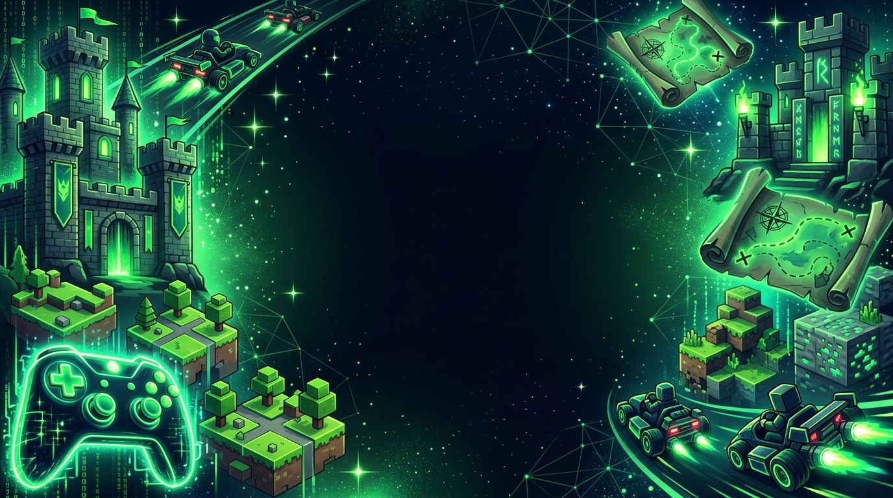

Jugar en Linux ya es nivel fácil.
Linux no es solo para servidores. Hoy puedes jugar miles de títulos — incluyendo juegos AAA de Windows — gracias a herramientas abiertas que lo hacen posible.
Elige tu modo de juego
Primero la plataforma que hace posible todo; después, juegos libres que puedes instalar hoy mismo.
No encontramos nada con ese término. Prueba con otra palabra.
Así se ven en pantalla
Una mirada rápida a cada juego y plataforma. Toca una imagen para verla en grande y saltar a su ficha.
Imágenes ilustrativas generadas con IA (Gemini); no son capturas reales de los juegos.
¿Qué juego es para ti?
Cuatro preguntas rápidas y te recomendamos por dónde empezar.
Del instalador al primer nivel
Tres pasos. Sin consola, sin drama.
- 1
Instala la plataforma
Instala Steam (o Lutris) desde la tienda de software de tu distro. Es tan simple como cualquier otra app.
- 2
Activa Proton
En los ajustes de Steam habilita Steam Play: Proton traduce los juegos de Windows para que corran en Linux.
- 3
Elige y juega
Abre tu biblioteca, instala el título y presiona Jugar. Si falla, ProtonDB te cuenta cómo arreglarlo.
Así llegamos hasta aquí
Los momentos que convirtieron a Linux en un lugar para jugar. Desliza para avanzar de nivel.
- LV 012000
Tux Racer
El pingüino de Linux baja montañas en trineo: uno de los primeros juegos libres populares en Linux.
- LV 022003
Nace Battle for Wesnoth
Sale la primera versión de este juego de estrategia por turnos, hecho por voluntarios.
Ver ficha → - LV 032006
Renace SuperTuxKart
Nacido en 2004 como bifurcación de TuxKart, un nuevo equipo lo retoma y lanza su primera versión pública.
Ver ficha → - LV 042008
Wine 1.0
Tras 15 años de trabajo, Wine publica su versión 1.0: la base para correr programas de Windows en Linux.
- LV 052009
0 A.D. se libera
Wildfire Games abre el código de 0 A.D., que pasa a ser un juego libre de estrategia histórica.
Ver ficha → - LV 062010
Primer Minetest
Aparece Minetest, un mundo de bloques que cualquiera puede ampliar con mods.
Ver ficha → - LV 072013
Steam llega a Linux
Valve publica su tienda de juegos para Linux y presenta SteamOS.
- LV 082018
Llega Proton
Valve lanza Proton, basado en Wine: miles de juegos de Windows empiezan a funcionar en Linux.
Ver ficha → - LV 092022
Una consola con Linux
Sale la Steam Deck, una consola portátil que usa SteamOS, un sistema basado en Linux.
- LV 102024
Minetest ahora es Luanti
El proyecto cambia de nombre a Luanti para dejar claro que es un motor para crear muchos juegos.
Ver ficha →
Las ilustraciones de las tarjetas y la portada de esta página fueron generadas con IA (Gemini); no son fotografías ni capturas reales.